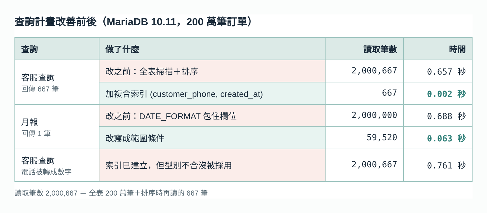

查詢越來越慢，主機商建議升級方案：先花十分鐘看執行計畫，再決定要不要加硬體
一家做五金批發的小公司，訂單系統用了快三年。最近客服常抱怨：客人打電話來問訂單，輸入手機號碼後要等好一陣子才出來；每月初會計跑上個月的營業額，那幾分鐘後台整個變慢。
主機商看了一下資源使用率，建議升級到更高的方案。老闆來問：「升級就會變快嗎？」
可能會快一點，但不一定解決問題。先確認一件事：慢，是因為機器太弱，還是因為每次查詢都讀了太多資料？後者升級主機只能撐一陣子，資料每個月還在長。
以下的公司、系統名稱、資料與時間都是虛構的示範情境；文中的 SQL 與執行結果是在 MariaDB 上實際跑出來的。
先把排查順序排好

第一步：找出是哪一句 SQL 慢
「系統很慢」通常不是每個畫面都慢，而是某幾句 SQL 很慢。MySQL／MariaDB 內建的 slow query log 會把執行超過指定秒數的 SQL 記下來：
SET GLOBAL slow_query_log = ON;
SET GLOBAL long_query_time = 0.5; -- 超過 0.5 秒就記錄
SET GLOBAL slow_query_log_file = '/var/log/mysql/slow.log';
SET GLOBAL 在資料庫重新啟動後就失效，適合臨時開來抓問題；要長期保留就寫進設定檔。需要 SUPER 或相關權限，共用主機方案可能沒有，這時候只能從程式端的記錄去找。
在示範資料庫上跑一次月報的查詢，log 裡會出現這一段：
# Query_time: 0.663598 Lock_time: 0.000089 Rows_sent: 1 Rows_examined: 2000000
SELECT COUNT(*) AS orders, SUM(total) AS amount
FROM orders
WHERE DATE_FORMAT(created_at, '%Y-%m') = '2026-10';
最值得看的是最後兩個數字：回傳 1 筆，讀了 200 萬筆。Rows_examined 遠大於實際需要的資料量，就是查詢計畫有問題的訊號，跟主機快慢無關。
第二步：用 EXPLAIN 看它打算怎麼找
示範用的訂單資料表長這樣，用 MariaDB 的 seq_1_to_N 序列表產生 200 萬筆、3,000 位客戶的假資料：
CREATE TABLE orders (
id INT UNSIGNED NOT NULL AUTO_INCREMENT PRIMARY KEY,
order_no VARCHAR(20) NOT NULL,
customer_phone VARCHAR(20) NOT NULL,
created_at DATETIME NOT NULL,
total DECIMAL(10,0) NOT NULL,
note VARCHAR(200) NULL,
KEY idx_created_at (created_at)
) ENGINE=InnoDB;
INSERT INTO orders (order_no, customer_phone, created_at, total, note)
SELECT CONCAT('SO', LPAD(seq, 8, '0')),
CONCAT('09', LPAD((seq * 7919) % 3000 + 10000000, 8, '0')),
'2024-01-01' + INTERVAL (seq * 0.75) MINUTE,
100 + (seq * 37) % 20000,
REPEAT('x', 80)
FROM seq_1_to_2000000;
注意 created_at 已經有索引。客服查詢用的 SQL：
SELECT id, order_no, created_at, total
FROM orders
WHERE customer_phone = '0910001234'
ORDER BY created_at DESC;
在前面加上 EXPLAIN，資料庫不會真的執行，只回報它打算怎麼找：
+------+-------------+--------+------+---------------+------+---------+------+---------+-----------------------------+
| id | select_type | table | type | possible_keys | key | key_len | ref | rows | Extra |
+------+-------------+--------+------+---------------+------+---------+------+---------+-----------------------------+
| 1 | SIMPLE | orders | ALL | NULL | NULL | NULL | NULL | 1982090 | Using where; Using filesort |
+------+-------------+--------+------+---------------+------+---------+------+---------+-----------------------------+
欄位很多，先看這四個就夠：
| 欄位 | 看什麼 | 這次的值代表 |
|---|---|---|
type |
怎麼找資料。ALL 是整張表從頭讀到尾，ref、range 是透過索引只讀一部分 |
ALL：全表掃描 |
possible_keys／key |
可以用的索引／實際選用的索引 | 兩個都是 NULL：沒有索引可用 |
rows |
預估要讀幾筆（是估計值，不是實際值） | 約 198 萬，幾乎整張表 |
Extra |
額外動作。Using filesort 是讀完之後另外排序 |
讀完還要再排一次 |
為了找一位客人的 667 筆訂單，資料庫每次都把 200 萬筆讀過一遍，再排序。換一台快兩倍的主機，就是讀得快兩倍；資料量再翻倍，又回到原點。
第三步：對症下藥，三種常見情況
情況一：根本沒有可用的索引
customer_phone 沒有索引，只能全表掃描。加一個複合索引：
ALTER TABLE orders
ADD INDEX idx_phone_created (customer_phone, created_at),
ALGORITHM=INPLACE, LOCK=NONE;
欄位順序有講究：等號比對的 customer_phone 放前面，排序用的 created_at 放後面。這樣同一位客人的訂單在索引裡已經照時間排好，連排序都省了。
ALGORITHM=INPLACE, LOCK=NONE 是要求建索引時不鎖住資料表，建的過程中還能寫入；如果資料庫做不到，會直接報錯，而不是默默鎖表。這次在示範環境建 200 萬筆的索引花了 2.5 秒左右，正式環境的資料量和負載不同，還是建議先在測試環境用相近的資料量試一次，並挑離峰時間做。
再 EXPLAIN 一次：
+------+-------------+--------+------+-------------------+-------------------+---------+-------+------+-------------+
| id | select_type | table | type | possible_keys | key | key_len | ref | rows | Extra |
+------+-------------+--------+------+-------------------+-------------------+---------+-------+------+-------------+
| 1 | SIMPLE | orders | ref | idx_phone_created | idx_phone_created | 82 | const | 667 | Using where |
+------+-------------+--------+------+-------------------+-------------------+---------+-------+------+-------------+
type 變成 ref，預估筆數從 198 萬變成 667，Using filesort 也消失了。
情況二：有索引，但欄位被函式包住
月報的查詢明明條件是 created_at，而 created_at 早就有索引，EXPLAIN 卻是這樣：
+------+-------------+--------+------+---------------+------+---------+------+---------+-------------+
| id | select_type | table | type | possible_keys | key | key_len | ref | rows | Extra |
+------+-------------+--------+------+---------------+------+---------+------+---------+-------------+
| 1 | SIMPLE | orders | ALL | NULL | NULL | NULL | NULL | 1982090 | Using where |
+------+-------------+--------+------+---------------+------+---------+------+---------+-------------+
possible_keys 是 NULL，資料庫認為沒有索引能用。原因在條件寫法：
WHERE DATE_FORMAT(created_at, '%Y-%m') = '2026-10'
索引裡存的是 created_at 的原始值，排好序方便找範圍；但條件要比對的是「created_at 經過 DATE_FORMAT 之後的結果」，資料庫只能每一筆都算一次再比。DATE()、YEAR()、MONTH()、LEFT() 包住欄位都是同樣的情況。
改寫成範圍條件，讓欄位保持原樣：
SELECT COUNT(*) AS orders, SUM(total) AS amount
FROM orders
WHERE created_at >= '2026-10-01'
AND created_at < '2026-11-01';
結束日期用「小於下個月 1 號」，就不用煩惱月底是 30 號還是 31 號，也不會漏掉 23:59:59 之後的資料。改寫後：
+------+-------------+--------+-------+----------------+----------------+---------+------+--------+-----------------------+
| id | select_type | table | type | possible_keys | key | key_len | ref | rows | Extra |
+------+-------------+--------+-------+----------------+----------------+---------+------+--------+-----------------------+
| 1 | SIMPLE | orders | range | idx_created_at | idx_created_at | 5 | NULL | 122858 | Using index condition |
+------+-------------+--------+-------+----------------+----------------+---------+------+--------+-----------------------+
rows 預估 12 萬，實際讀了 59,520 筆（從 slow log 的 Rows_examined 確認），這也說明 rows 只是估計。改寫前後兩句查詢的結果都是 59520 筆、金額 600836480，結果相同。
情況三：有索引，但型別不合
加完索引後，客服的查詢在測試時很快，上線後還是慢。追下去發現程式在組查詢前，把使用者輸入的電話轉成了數字：
SELECT id, order_no, created_at, total
FROM orders
WHERE customer_phone = 910001234
ORDER BY created_at DESC;
+------+-------------+--------+------+-------------------+------+---------+------+---------+-----------------------------+
| id | select_type | table | type | possible_keys | key | key_len | ref | rows | Extra |
+------+-------------+--------+------+-------------------+------+---------+------+---------+-----------------------------+
| 1 | SIMPLE | orders | ALL | idx_phone_created | NULL | NULL | NULL | 1982090 | Using where; Using filesort |
+------+-------------+--------+------+-------------------+------+---------+------+---------+-----------------------------+
這次 possible_keys 有值，key 卻是 NULL：索引在，但沒被採用。在 EXPLAIN 之後接著執行 SHOW WARNINGS，MariaDB 會直接說明原因（單純執行查詢不會出現這則訊息）：
Note 1105: Cannot use key `idx_phone_created` part[0] for lookup: `shop_demo`.`orders`.`customer_phone` of type `varchar` = "910001234" of type `int`
字串欄位跟數字比較時，資料庫要把每一筆的字串轉成數字再比，索引的排序就派不上用場。更麻煩的是查詢結果完全正確：'0910001234' 轉成數字剛好等於 910001234，一樣回傳 667 筆，畫面上看不出任何異狀，只是每次都讀 200 萬筆。
修法是在程式端把參數當字串傳入，不需要動資料庫。possible_keys 有值而 key 是 NULL，也可能是符合條件的資料太多（例如查「狀態 = 已完成」，九成訂單都符合），資料庫判斷直接全表讀比較快；這種情況要從查詢條件或索引設計重新考慮，不是型別問題。
改完之後，用同一台機器比一次

示範環境沒有其他使用者，單次查詢不到一秒；放到正式環境，同一時間有好幾個客服在查、旁邊還有批次在跑，每一次都讀 200 萬筆的查詢會互相搶磁碟和記憶體。這裡要看的是讀取筆數：它決定了資料量成長時查詢會不會跟著變慢，絕對秒數則會隨機器不同而改變。
加索引不是免費的
- 佔空間：示範資料表的索引從約 29 MB 增加到 82 MB（
information_schema.TABLES的index_length）。 - 拖慢寫入：每次新增、修改訂單，資料庫都要多維護一份索引。不要看到慢就每個欄位都加，只加 slow log 裡確實需要的。
- 建立當下有風險：大資料表建索引需要時間與額外的磁碟空間，前面提過要先在測試環境試、挑離峰時間。
什麼時候才真的該加硬體
把主要的慢查詢都處理過，Rows_examined 已經接近實際需要的筆數，系統還是慢，這時候升級才有明確的理由，例如經常查詢的資料大到放不進資料庫的記憶體快取，或磁碟讀寫已經滿載。先把查詢修好，再看硬體，升級規格時也比較知道要升哪一項。
用其他資料庫的話
- MySQL 8：
EXPLAIN多了partitions、filtered兩欄，前面四個欄位的判讀方式相同；MySQL 8.0.18 之後也有EXPLAIN ANALYZE，會真的執行並回報實際筆數與時間。MySQL 官方文件同樣說明字串欄位與數字比較時無法使用該欄位的索引。（這段沒有在 MySQL 8 上實測。） - SQL Server：在 SSMS 勾選「包括實際執行計畫」（Ctrl+M）後執行查詢，看到
Table Scan或Clustered Index Scan而不是Index Seek，就是同樣的全表掃描；執行前加上SET STATISTICS IO ON;可以看到每張表的 logical reads，作用接近這裡的讀取筆數。執行計畫上偶爾會出現建議建立的索引（Missing Index），可以參考，但一樣要評估寫入與空間成本，不要照單全收。（這段沒有在 SQL Server 上實測。）
本文的 SQL 在 Ubuntu 24.04、MariaDB 10.11.14 實際執行過，
EXPLAIN輸出、slow log 片段、警告訊息與查詢結果都與實際輸出相同（SHOW WARNINGS的表格框線改成一行顯示）。前後對照圖的時間是同一台沙盒機器上連續執行 5 次的中位數，只用來比較前後差異，不代表任何正式環境的效能。MySQL 8 與 SQL Server 的部分沒有實測。
學到什麼
- 系統變慢，先找出是哪一句 SQL，再看它讀了多少筆。
Rows_examined遠大於回傳筆數，加硬體只能延後問題。 EXPLAIN先看四個欄位：type、possible_keys／key、rows、Extra。ALL加上接近整張表的rows，就是全表掃描。- 有索引不代表會被用到：欄位被函式包住、型別不合，都會讓索引失效，而且查詢結果完全正確，不會有任何錯誤訊息。
- 複合索引的欄位順序要配合查詢：等號條件在前，範圍或排序欄位在後。
- 每個改動都用同一份資料、同一台機器比讀取筆數與時間，確認真的有改善，也確認結果沒有變。
如果你的系統也是越用越慢、不確定該升級主機還是先修查詢，問達工作室可以幫你從 slow log 和執行計畫找出真正拖慢系統的那幾句 SQL，再決定怎麼改。